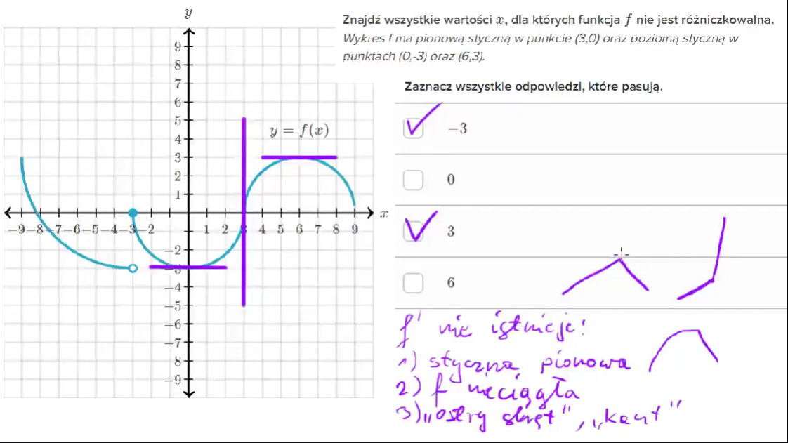
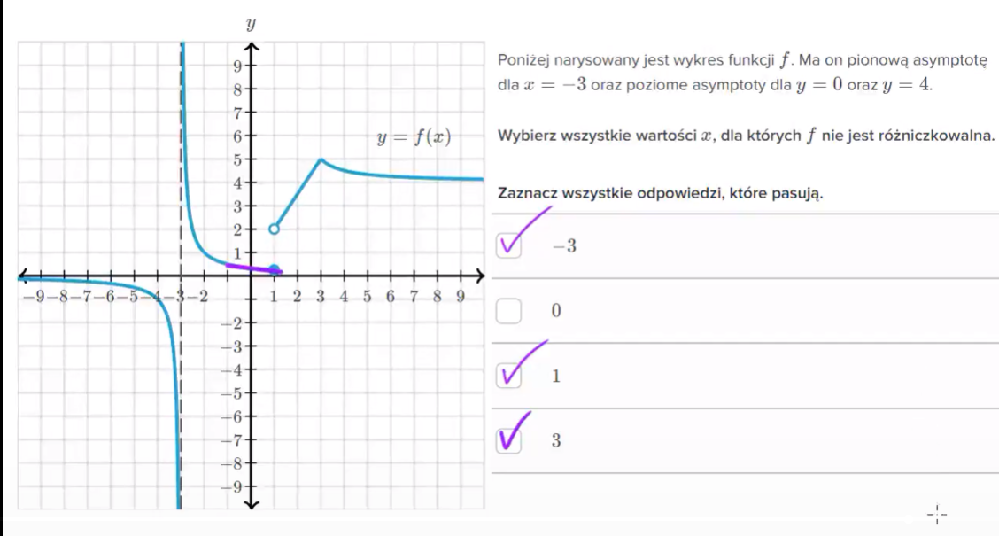
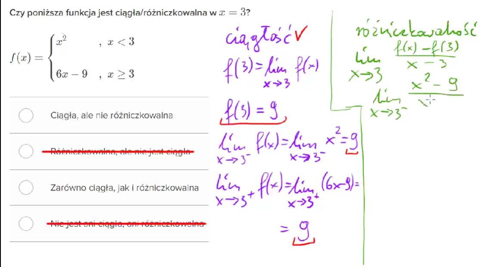
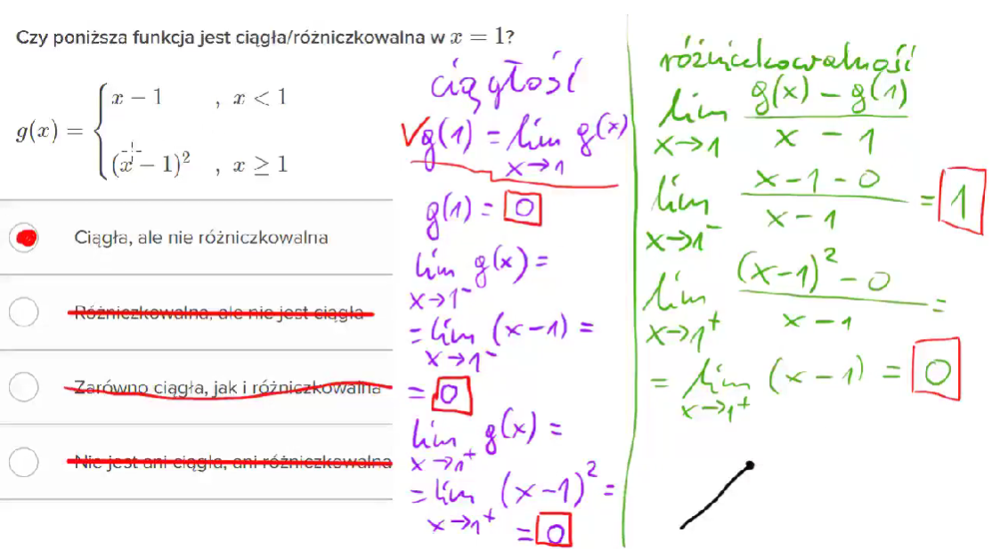

3.Różniczkowanie funkcji
I. Definicja i Interpretacja Geometryczna Pochodnej¶
Pochodna funkcji \(f(x)\) w punkcie \(x_0\), oznaczana jako \(\mathbf{f'(x_0)}\), jest granicą ilorazu różnicowego. Definicja ta pozwala nam obliczyć chwilową prędkość zmiany funkcji.
Definicja¶
Pochodna jest definiowana jako:
Interpretacja Geometryczna¶
- Pochodna \(f'(x_0)\) to współczynnik kierunkowy prostej stycznej do wykresu funkcji w punkcie \((x_0, f(x_0))\). Mówi nam o stromości wykresu w tym miejscu.
- Monotoniczność:
- Jeśli \(\mathbf{f'(x) > 0}\), funkcja rośnie.
- Jeśli \(\mathbf{f'(x) < 0}\), funkcja maleje.
- Jeśli \(\mathbf{f'(x) = 0}\), funkcja ma punkt stacjonarny max lub min (styczna jest pozioma).
Ewentualnie możesz spotkać drugą, równoważną wersję tego wzoru:
Zadanie i Rozwiązanie¶
Zadanie: Oblicz pochodną funkcji \(f(x) = x^2\) w punkcie \(x=3\), korzystając z definicji.
Rozwiązanie:
- Obliczenie licznika: \(f(3 + h) - f(3) = (3+h)^2 - 3^2 = (9 + 6h + h^2) - 9 = 6h + h^2\).
- Iloraz różnicowy: \(\frac{6h + h^2}{h} = \frac{h(6 + h)}{h} = 6 + h\).
- Obliczenie granicy: \(f'(3) = \lim_{h \to 0} (6 + h) = 6\).
- Wynik: Pochodna \(f'(3) = 6\).
II. Różniczkowalność funkcji¶
Co to znaczy, że funkcja jest różniczkowalna?¶
Funkcja jest różniczkowalna w punkcie \(x_0\), jeśli istnieje w tym punkcie jej pochodna właściwa.
-
Intuicja geometryczna: Wykres funkcji w tym punkcie musi być „gładki”. Oznacza to, że w tym punkcie można narysować dokładnie jedną linię styczną.Intuicja matematyczna: Granica ilorazu różnicowego istnieje i jest liczbą:
\[\lim_{h \to 0} \frac{f(x_0 + h) - f(x_0)}{h} = f'(x_0)\]
Relacja: Ciągłość a Różniczkowalność¶
W matematyce obowiązuje żelazna zasada „w jedną stronę”:
-
Różniczkowalna \(\implies\) Ciągła: Jeśli funkcja ma pochodną w danym punkcie, to musi być w nim ciągła. Nie ma pochodnej bez ciągłości.
-
Ciągła \(\not\implies\) Różniczkowalna: To, że funkcja jest ciągła (możesz ją narysować bez odrywania ołówka), nie gwarantuje, że da się w każdym punkcie policzyć jej pochodną.
Dlaczego funkcja ciągła może NIE być różniczkowalna?¶
Istnieją trzy główne powody, dla których „ładna” ciągła funkcja traci pochodną:
-
„Ostre zakręty” (Ostrza):Funkcja gwałtownie zmienia kierunek. W takim punkcie nie da się wyznaczyć jednej stycznej (można by ich tam wstawić nieskończenie wiele).
Przykład: Funkcja moduł \(f(x) = |x|\) w punkcie \(x = 0\). Wykres tworzy literę „V”. W samym czubku pochodna nie istnieje.
-
Pionowa styczna:Wykres funkcji w pewnym punkcie staje się idealnie pionowy. Ponieważ pochodna to nachylenie stycznej, a pionowa linia ma nachylenie „nieskończone”, pochodna (jako liczba) nie istnieje.
Przykład: \(f(x) = \sqrt[3]{x}\) w punkcie \(x = 0\).


- Bardzo gęste oscylacje:Funkcja tak szybko „drży” (oscyluje), że nie może zdecydować się na jeden konkretny kierunek stycznej.
Przykład: \(f(x) = x \sin(1/x)\) w punkcie \(x = 0\).
Sprawdzenie różniczkowalności funkcji¶
Przykład: Sprawdźmy \(f(x) = |x|\) w punkcie \(x_0 = 0\)
Wiemy, że wykres ma tam ostry zakręt. Sprawdźmy to wzorem:
Prawostronna (\(h \to 0^+\)):
Lewostronna (\(h \to 0^-\)):
Wynik: \(1 \neq -1\), więc funkcja \(|x|\) nie jest różniczkowalna w zerze.


III. Pochodne¶
Podstawowe wzory pochodnych¶
- Pochodna stałej (liczby): \((\mathbf{c})' = 0\)
- Pochodna potęgi: \((\mathbf{x^n})' = nx^{n-1}\)
- Pochodna samego x: \((\mathbf{x})' = 1\)
- Pochodna pierwiastka: \((\mathbf{\sqrt{x}})' = \frac{1}{2\sqrt{x}}\)
- Pochodna funkcji wykładniczej: \((\mathbf{e^x})' = e^x\)
- Pochodna logarytmu naturalnego: \((\mathbf{\ln x})' = \frac{1}{x}\)
- Pochodna sinusa: \((\mathbf{\sin x})' = \cos x\)
- Pochodna cosinusa: \((\mathbf{\cos x})' = -\sin x\)
- Pochodna tangensa: \((\mathbf{\tan x})' = \frac{1}{\cos^2 x}\)
Liczenie pochodnej cotangensa
Główne Reguły¶
-
Pochodna Sumy/Różnicy:
\[(f(x) \pm g(x))' = f'(x) \pm g'(x)\] -
Pochodna Iloczynu:
\[(f(x)g(x))' = f'(x)g(x) + f(x)g'(x)\] -
Pochodna Ilorazu:
\[\left(\frac{f(x)}{g(x)}\right)' = \frac{f'(x)g(x) - f(x)g'(x)}{[g(x)]^2}\] -
Reguła Łańcuchowa: Dla funkcji złożonej \(f(x) = g(h(x))\), pochodna wynosi:
\[f'(x) = g'(h(x)) \cdot h'(x)\](pochodna funkcji zewnętrznej razy pochodna funkcji wewnętrznej).
Zadanie i Rozwiązanie (Reguły Ilorazu i Łańcuchowa)¶
Zadanie: Oblicz pochodną funkcji \(f(x) = \frac{\sin(2x)}{e^x}\).
Rozwiązanie:
- Identyfikacja: Licznik \(f(x) = \sin(2x)\), Mianownik \(g(x) = e^x\).
- Pochodne składowe:
- \(f'(x) = (\sin(2x))' = \cos(2x) \cdot 2 = 2\cos(2x)\) (Reguła Łańcuchowa).
- \(g'(x) = (e^x)' = e^x\).
-
Zastosowanie Reguły Ilorazu:
\[f'(x) = \frac{(2\cos(2x)) \cdot e^x - \sin(2x) \cdot e^x}{(e^x)^2}\] -
Uproszczenie: Wyciągamy \(e^x\) z licznika i skracamy:
\[f'(x) = \frac{e^x(2\cos(2x) - \sin(2x))}{e^{2x}} = \frac{2\cos(2x) - \sin(2x)}{e^x}\] -
Wynik: \(\mathbf{f'(x) = e^{-x}(2\cos(2x) - \sin(2x))}\).
Iv. Zastosowanie: Ekstrema Lokalne i Krzywizna¶
Pochodne wyższych rzędów (druga pochodna \(\mathbf{f''(x)}\)) opisują kształt wykresu i pomagają klasyfikować punkty stacjonarne.
1. Druga Pochodna i Krzywizna¶
- Druga pochodna to pochodna pierwszej pochodnej (\(f''(x) = (f'(x))'\)). Mówi nam, jak zmienia się nachylenie wykresu.
- Wklęsłość i Wypukłość:
- Jeśli \(\mathbf{f''(x) > 0}\), funkcja jest wypukła (krzywizna w górę, jak uśmiech).
- Jeśli \(\mathbf{f''(x) < 0}\), funkcja jest wklęsła (krzywizna w dół, jak smutna buzia).
- Punkt Przegięcia: Punkt, w którym zmienia się znak \(f''(x)\) (a więc zmienia się krzywizna). Warunek konieczny: \(f''(x)=0\).
2. Warunki Istnienia Ekstremów Lokalnych¶
Aby znaleźć i sklasyfikować ekstrema (maksima i minima), używamy dwóch kroków:
- Warunek Konieczny (Krok 1): Znajdź punkty stacjonarne, gdzie \(\mathbf{f'(x) = 0}\).
- Warunek Wystarczający (Krok 2 - Test Drugiej Pochodnej):
- Jeśli \(f'(x_0)=0\) i \(\mathbf{f''(x_0) > 0}\) (wypukłość), funkcja ma MINIMUM lokalne.
- Jeśli \(f'(x_0)=0\) i \(\mathbf{f''(x_0) < 0}\) (wklęsłość), funkcja ma MAKSIMUM lokalne.
Zadanie: Pełna Analiza Funkcji¶
Zadanie: Przeprowadź pełną analizę funkcji \(f(x) = x^3 - 3x\) (monotoniczność, ekstrema, krzywizna).
Rozwiązanie:
- Pierwsza pochodna i punkty stacjonarne:
- \(f'(x) = 3x^2 - 3\).
- \(f'(x) = 0 \implies 3x^2 - 3 = 0 \implies x^2 = 1 \implies \mathbf{x = -1}\) i \(\mathbf{x = 1}\).
- Monotoniczność i Ekstrema (Analiza znaku \(f'(x)\)):
- \(f'(x) > 0\) dla \(x \in (-\infty, -1) \cup (1, \infty)\) (Funkcja rośnie).
- \(f'(x) < 0\) dla \(x \in (-1, 1)\) (Funkcja maleje).
- Zmiana znaku z + na - w \(x=-1\) to MAKSIMUM LOKALNE.
- Zmiana znaku z - na + w \(x=1\) to MINIMUM LOKALNE.
- Druga pochodna i Punkt Przegięcia:
- \(f''(x) = (3x^2 - 3)' = \mathbf{6x}\).
- \(f''(x) = 0 \implies 6x = 0 \implies \mathbf{x = 0}\) (Punkt Przegięcia).
- Krzywizna:
- Dla \(x < 0\), \(f''(x) < 0\) (Wklęsłość).
- Dla \(x > 0\), \(f''(x) > 0\) (Wypukłość).
V. Zastosowanie: Problemy Optymalizacyjne¶
Pochodne są kluczowe w optymalizacji, pozwalając znaleźć maksymalne lub minimalne wartości (np. największy zysk, najmniejszy koszt).
Zadanie: Maksymalizacja Pola¶
Zadanie: Mamy \(100 \text{ m}\) ogrodzenia. Jakie wymiary prostokątnego ogródka dadzą największe pole?
Rozwiązanie:
-
Definicja funkcji (Pole): Niech wymiary to \(x\) i \(y\).
Obwód: \(2x + 2y = 100 \implies y = 50 - x\).
Funkcja Pola: \(\mathbf{P(x) = x(50 - x) = 50x - x^2}\).
-
Pochodna: \(P'(x) = 50 - 2x\).
-
Punkt Stacjonarny: \(P'(x) = 0 \implies 50 - 2x = 0 \implies \mathbf{x = 25}\).
-
Weryfikacja: Druga pochodna \(P''(x) = -2\) (jest ujemna, co gwarantuje maksimum).
-
Wynik: \(x = 25 \text{ m}\). Wymiar \(y = 50 - 25 = 25 \text{ m}\).
Wymiary to \(\mathbf{25 \text{ m} \times 25 \text{ m}}\) (kwadrat).